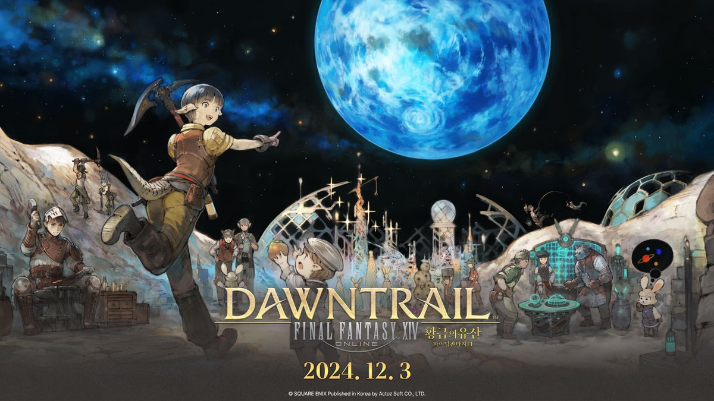
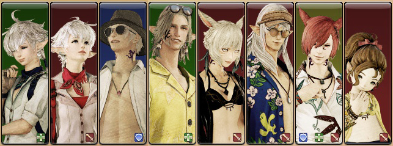
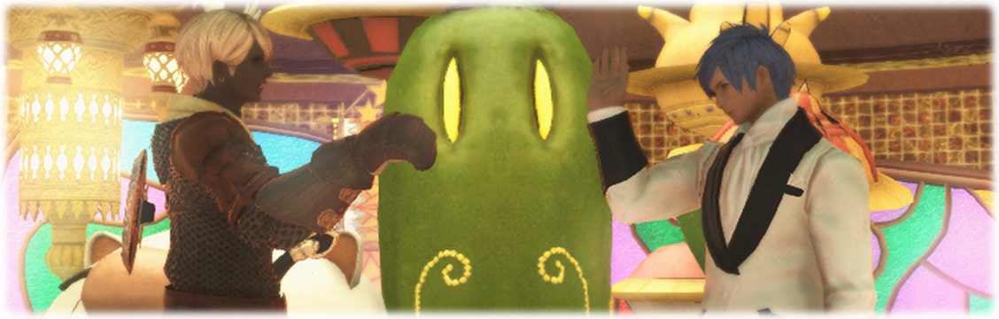
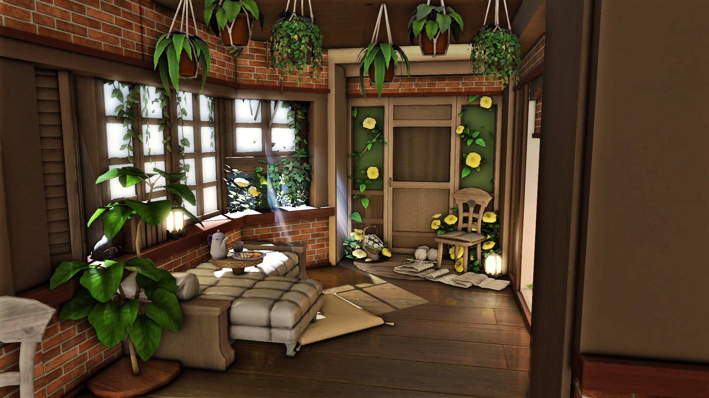
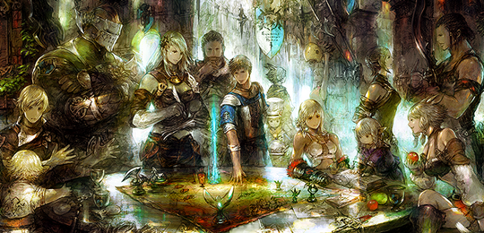
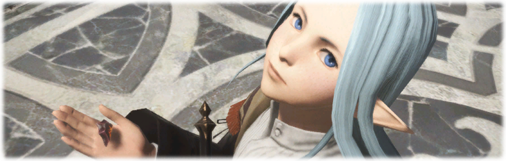
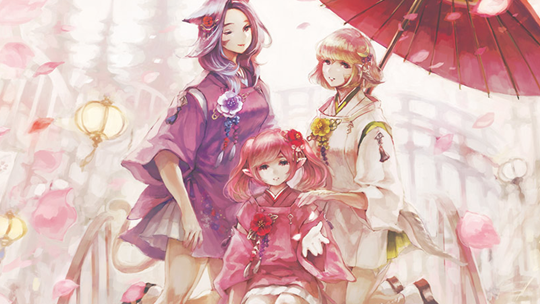

제작 및 채집

광부, 원예가, 어부, 요리사, 대장장이 등
매력적인 11종의 생활직업과 함께
다양한 채집하고 만들어보세요!
임무지원 및 트러스트

혼자서도 NPC와 함께 던전을 공략할 수 있는
파이널판타지 14만의 특별한 시스템을 통해
퀘스트를 진행하며 나만의 속도로 모험을 즐기세요!
맨더빌 골드소서

맨더빌 골드소서에서 다양한 미니게임과
초코보 경주, 카드 게임 등을 즐겨보세요!
하우징

개인이나 자유부대가
함께 꾸미고 생활할 수 있는 하우징!
다양한 아이템을 통해 꾸며보세요!
자유부대

모험가가 자유롭게 모여서
결성하는 조직, 자유부대
소속 부대원들과 모험을 즐겨보세요!
외전 스토리

주요 스토리 이후의 뒷이야기들과
NPC, 우호부족, 각 지역의 숨겨진 이야기까지,
주요 스토리에서 알 수 없었던
흥미진진한 이야기를 직접 체험해보세요!
시즌 이벤트

매년 특정 시기마다
다채로운 이벤트가 시작됩니다!
계절에 맞춰 변화하는 도시와 함께
특별한 이야기를 경험해보세요!